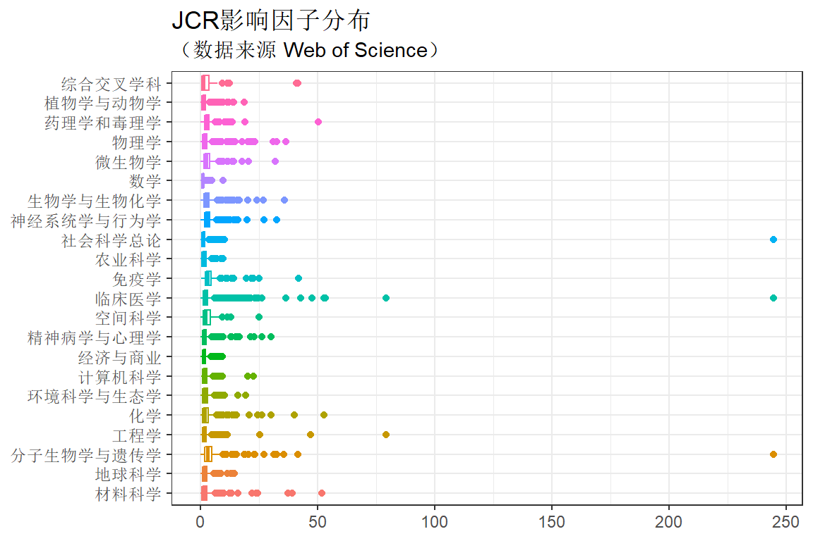
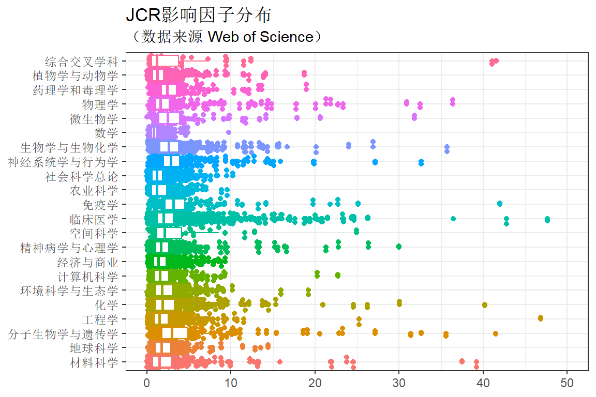
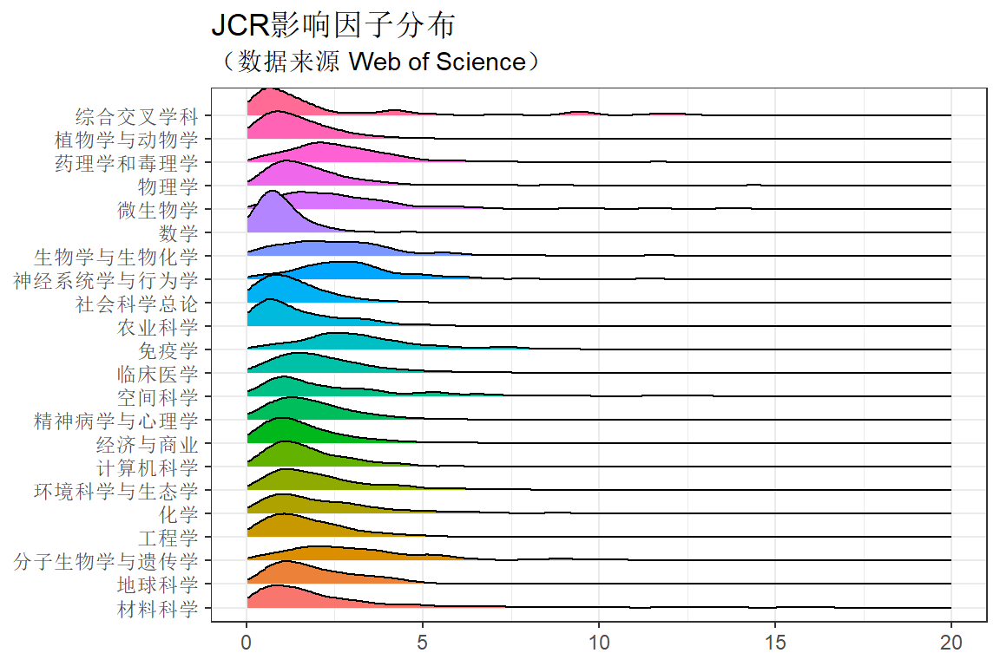

第 12 章 期刊的影响因子
12.1 各学科影响因子最高的期刊
## Observations: 11,684
## Variables: 11
## $ ISSN <chr> "2053-1583", "2190-572X", ...
## $ Full_title <chr> "2D Materials", "3 Biotech...
## $ Category_ESI <chr> "MATERIALS SCIENCE", "BIOL...
## $ Category_ESI_cn <chr> "材料科学", "生物学与生物化学", "工程学",...
## $ Category_CAS <chr> "工程技术", NA, "工程技术", "管理科学"...
## $ Degree_CAS <int> 1, NA, 2, 3, 2, 2, 4, 4, 4...
## $ Title <chr> NA, NA, NA, NA, NA, NA, NA...
## $ is_chinese <dbl> 0, 0, 0, 0, 0, 0, 0, 0, 0,...
## $ Cites <dbl> 3284, 1108, 260, 460, 1303...
## $ ImpactFactor <dbl> 7.042, 1.497, 2.304, 1.206...
## $ Eigenfactor <dbl> 0.01174, 0.00221, 0.00074,...esi_plus_cas_IF_set %>% select(Category_ESI_cn, Full_title, ImpactFactor ) %>%
arrange(Category_ESI_cn, desc(ImpactFactor)) %>%
group_by(Category_ESI_cn) %>%
top_n(10)%>%
knitr::kable( booktabs = T, caption = "各学科影响因子最高的期刊") %>%
kable_styling("striped")| Category_ESI_cn | Full_title | ImpactFactor |
|---|---|---|
| 材料科学 | Nature Reviews Materials | 51.941 |
| 材料科学 | NATURE MATERIALS | 39.235 |
| 材料科学 | Nature Nanotechnology | 37.490 |
| 材料科学 | Materials Today | 24.537 |
| 材料科学 | MATERIALS SCIENCE & ENGINEERING R-REPORTS | 24.480 |
| 材料科学 | PROGRESS IN MATERIALS SCIENCE | 23.750 |
| 材料科学 | ADVANCED MATERIALS | 21.950 |
| 材料科学 | Advanced Energy Materials | 21.875 |
| 材料科学 | Annual Review of Materials Research | 15.846 |
| 材料科学 | ADVANCED FUNCTIONAL MATERIALS | 13.325 |
| 地球科学 | Nature Geoscience | 14.391 |
| 地球科学 | REVIEWS OF GEOPHYSICS | 13.529 |
| 地球科学 | Annual Review of Marine Science | 12.867 |
| 地球科学 | Annual Review of Earth and Planetary Sciences | 11.391 |
| 地球科学 | Reviews in Mineralogy & Geochemistry | 8.846 |
| 地球科学 | Earth System Science Data | 8.792 |
| 地球科学 | BULLETIN OF THE AMERICAN METEOROLOGICAL SOCIETY | 7.804 |
| 地球科学 | EARTH-SCIENCE REVIEWS | 7.491 |
| 地球科学 | REMOTE SENSING OF ENVIRONMENT | 6.457 |
| 地球科学 | ISPRS JOURNAL OF PHOTOGRAMMETRY AND REMOTE SENSING | 5.994 |
| 分子生物学与遗传学 | Oncotarget | 244.585 |
| 分子生物学与遗传学 | NATURE REVIEWS GENETICS | 41.465 |
| 分子生物学与遗传学 | NATURE REVIEWS MOLECULAR CELL BIOLOGY | 35.612 |
| 分子生物学与遗传学 | NATURE MEDICINE | 32.621 |
| 分子生物学与遗传学 | CELL | 31.398 |
| 分子生物学与遗传学 | NATURE GENETICS | 27.125 |
| 分子生物学与遗传学 | Cell Stem Cell | 23.290 |
| 分子生物学与遗传学 | CANCER CELL | 22.844 |
| 分子生物学与遗传学 | Cell Metabolism | 20.565 |
| 分子生物学与遗传学 | NATURE CELL BIOLOGY | 19.064 |
| 工程学 | TECHNOLOGY REVIEW | 79.258 |
| 工程学 | Nature Energy | 46.859 |
| 工程学 | PROGRESS IN ENERGY AND COMBUSTION SCIENCE | 25.242 |
| 工程学 | INTERNATIONAL JOURNAL OF COMPUTER VISION | 11.541 |
| 工程学 | PROGRESS IN QUANTUM ELECTRONICS | 10.733 |
| 工程学 | IEEE Industrial Electronics Magazine | 10.429 |
| 工程学 | IEEE TRANSACTIONS ON PATTERN ANALYSIS AND MACHINE INTELLIGENCE | 9.455 |
| 工程学 | RENEWABLE & SUSTAINABLE ENERGY REVIEWS | 9.184 |
| 工程学 | PROCEEDINGS OF THE IEEE | 9.107 |
| 工程学 | IEEE TRANSACTIONS ON FUZZY SYSTEMS | 8.415 |
| 化学 | CHEMICAL REVIEWS | 52.613 |
| 化学 | CHEMICAL SOCIETY REVIEWS | 40.182 |
| 化学 | Energy & Environmental Science | 30.067 |
| 化学 | Nature Chemistry | 26.201 |
| 化学 | PROGRESS IN POLYMER SCIENCE | 24.558 |
| 化学 | ACCOUNTS OF CHEMICAL RESEARCH | 20.955 |
| 化学 | JOURNAL OF PHOTOCHEMISTRY AND PHOTOBIOLOGY C-PHOTOCHEMISTRY REVIEWS | 15.325 |
| 化学 | COORDINATION CHEMISTRY REVIEWS | 14.499 |
| 化学 | JOURNAL OF THE AMERICAN CHEMICAL SOCIETY | 14.357 |
| 化学 | Chem | 14.104 |
| 环境科学与生态学 | Nature Climate Change | 19.181 |
| 环境科学与生态学 | TRENDS IN ECOLOGY & EVOLUTION | 15.938 |
| 环境科学与生态学 | Annual Review of Ecology Evolution and Systematics | 10.160 |
| 环境科学与生态学 | ECOLOGY LETTERS | 9.137 |
| 环境科学与生态学 | GLOBAL CHANGE BIOLOGY | 8.997 |
| 环境科学与生态学 | SYSTEMATIC BIOLOGY | 8.523 |
| 环境科学与生态学 | ENVIRONMENTAL HEALTH PERSPECTIVES | 8.309 |
| 环境科学与生态学 | FRONTIERS IN ECOLOGY AND THE ENVIRONMENT | 8.302 |
| 环境科学与生态学 | ECOLOGICAL MONOGRAPHS | 7.828 |
| 环境科学与生态学 | CRITICAL REVIEWS IN ENVIRONMENTAL SCIENCE AND TECHNOLOGY | 7.683 |
| 计算机科学 | Journal of Statistical Software | 22.737 |
| 计算机科学 | IEEE Communications Surveys and Tutorials | 20.230 |
| 计算机科学 | IEEE COMMUNICATIONS MAGAZINE | 9.270 |
| 计算机科学 | IEEE WIRELESS COMMUNICATIONS | 9.202 |
| 计算机科学 | IEEE Transactions on Cybernetics | 8.803 |
| 计算机科学 | IEEE TRANSACTIONS ON EVOLUTIONARY COMPUTATION | 8.124 |
| 计算机科学 | IEEE Transactions on Neural Networks and Learning Systems | 7.982 |
| 计算机科学 | IEEE Transactions on Cloud Computing | 7.928 |
| 计算机科学 | IEEE NETWORK | 7.197 |
| 计算机科学 | NEURAL NETWORKS | 7.197 |
| 经济与商业 | Academy of Management Annals | 9.281 |
| 经济与商业 | ACADEMY OF MANAGEMENT REVIEW | 8.855 |
| 经济与商业 | JOURNAL OF THE ACADEMY OF MARKETING SCIENCE | 8.488 |
| 经济与商业 | JOURNAL OF MANAGEMENT | 8.080 |
| 经济与商业 | QUARTERLY JOURNAL OF ECONOMICS | 7.863 |
| 经济与商业 | JOURNAL OF MARKETING | 7.338 |
| 经济与商业 | JOURNAL OF SERVICE RESEARCH | 6.842 |
| 经济与商业 | ACADEMY OF MANAGEMENT JOURNAL | 6.700 |
| 经济与商业 | JOURNAL OF HUMAN RESOURCES | 6.531 |
| 经济与商业 | INTERNATIONAL JOURNAL OF MANAGEMENT REVIEWS | 6.489 |
| 精神病学与心理学 | World Psychiatry | 30.000 |
| 精神病学与心理学 | PSYCHOLOGICAL INQUIRY | 26.364 |
| 精神病学与心理学 | Annual Review of Psychology | 22.774 |
| 精神病学与心理学 | Psychological Science in the Public Interest | 21.286 |
| 精神病学与心理学 | JAMA Psychiatry | 16.642 |
| 精神病学与心理学 | Industrial and Organizational Psychology-Perspectives on Science and Practice | 16.375 |
| 精神病学与心理学 | TRENDS IN COGNITIVE SCIENCES | 15.557 |
| 精神病学与心理学 | Lancet Psychiatry | 15.233 |
| 精神病学与心理学 | AMERICAN JOURNAL OF PSYCHIATRY | 13.391 |
| 精神病学与心理学 | Annual Review of Clinical Psychology | 13.278 |
| 空间科学 | Annual Review of Astronomy and Astrophysics | 24.912 |
| 空间科学 | Living Reviews in Solar Physics | 12.833 |
| 空间科学 | ASTRONOMY AND ASTROPHYSICS REVIEW | 11.611 |
| 空间科学 | SPACE SCIENCE REVIEWS | 9.327 |
| 空间科学 | ASTROPHYSICAL JOURNAL SUPPLEMENT SERIES | 8.561 |
| 空间科学 | NEW ASTRONOMY REVIEWS | 7.500 |
| 空间科学 | Astrophysical Journal Letters | 6.634 |
| 空间科学 | Physics of the Dark Universe | 6.509 |
| 空间科学 | ASTRONOMY & ASTROPHYSICS | 5.565 |
| 空间科学 | ASTROPHYSICAL JOURNAL | 5.551 |
| 临床医学 | CA-A CANCER JOURNAL FOR CLINICIANS | 244.585 |
| 临床医学 | DIGESTIVE DISEASES | 244.585 |
| 临床医学 | JOURNAL OF COSMETIC SCIENCE | 244.585 |
| 临床医学 | NEW ENGLAND JOURNAL OF MEDICINE | 79.258 |
| 临床医学 | LANCET | 53.254 |
| 临床医学 | PEDIATRIC DENTISTRY | 53.254 |
| 临床医学 | TUMORI | 52.613 |
| 临床医学 | JAMA-JOURNAL OF THE AMERICAN MEDICAL ASSOCIATION | 47.661 |
| 临床医学 | NATURE REVIEWS CANCER | 42.784 |
| 临床医学 | LANCET ONCOLOGY | 36.418 |
| 免疫学 | NATURE REVIEWS IMMUNOLOGY | 41.982 |
| 免疫学 | LANCET INFECTIOUS DISEASES | 25.148 |
| 免疫学 | Annual Review of Immunology | 22.714 |
| 免疫学 | NATURE IMMUNOLOGY | 21.809 |
| 免疫学 | IMMUNITY | 19.734 |
| 免疫学 | TRENDS IN IMMUNOLOGY | 14.188 |
| 免疫学 | JOURNAL OF ALLERGY AND CLINICAL IMMUNOLOGY | 13.258 |
| 免疫学 | Lancet HIV | 11.355 |
| 免疫学 | JOURNAL OF EXPERIMENTAL MEDICINE | 10.790 |
| 免疫学 | IMMUNOLOGICAL REVIEWS | 9.217 |
| 农业科学 | Annual Review of Food Science and Technology | 9.523 |
| 农业科学 | Annual Review of Nutrition | 8.886 |
| 农业科学 | COMPREHENSIVE REVIEWS IN FOOD SCIENCE AND FOOD SAFETY | 7.028 |
| 农业科学 | TRENDS IN FOOD SCIENCE & TECHNOLOGY | 6.609 |
| 农业科学 | CRITICAL REVIEWS IN FOOD SCIENCE AND NUTRITION | 6.015 |
| 农业科学 | NUTRITION REVIEWS | 5.788 |
| 农业科学 | Global Change Biology Bioenergy | 5.415 |
| 农业科学 | PROCEEDINGS OF THE NUTRITION SOCIETY | 5.347 |
| 农业科学 | MOLECULAR NUTRITION & FOOD RESEARCH | 5.151 |
| 农业科学 | FOOD HYDROCOLLOIDS | 5.089 |
| 社会科学总论 | ENVIRONMENTAL ETHICS | 244.585 |
| 社会科学总论 | Dialogues in Human Geography | 10.214 |
| 社会科学总论 | Annual Review of Public Health | 9.491 |
| 社会科学总论 | INTERNATIONAL JOURNAL OF EPIDEMIOLOGY | 8.360 |
| 社会科学总论 | REVIEW OF EDUCATIONAL RESEARCH | 8.241 |
| 社会科学总论 | EPIDEMIOLOGIC REVIEWS | 7.583 |
| 社会科学总论 | EUROPEAN JOURNAL OF EPIDEMIOLOGY | 7.023 |
| 社会科学总论 | PROGRESS IN HUMAN GEOGRAPHY | 6.885 |
| 社会科学总论 | Annual Review of Sociology | 6.773 |
| 社会科学总论 | ECONOMIC GEOGRAPHY | 6.438 |
| 神经系统学与行为学 | NATURE REVIEWS NEUROSCIENCE | 32.635 |
| 神经系统学与行为学 | LANCET NEUROLOGY | 27.138 |
| 神经系统学与行为学 | NATURE NEUROSCIENCE | 19.912 |
| 神经系统学与行为学 | Nature Reviews Neurology | 19.819 |
| 神经系统学与行为学 | ACTA NEUROPATHOLOGICA | 15.872 |
| 神经系统学与行为学 | BEHAVIORAL AND BRAIN SCIENCES | 15.071 |
| 神经系统学与行为学 | Annual Review of Neuroscience | 14.675 |
| 神经系统学与行为学 | NEURON | 14.318 |
| 神经系统学与行为学 | PROGRESS IN NEUROBIOLOGY | 14.163 |
| 神经系统学与行为学 | Alzheimers & Dementia | 12.740 |
| 生物学与生物化学 | NATURE BIOTECHNOLOGY | 35.724 |
| 生物学与生物化学 | NATURE METHODS | 26.919 |
| 生物学与生物化学 | PHYSIOLOGICAL REVIEWS | 24.014 |
| 生物学与生物化学 | Annual Review of Biochemistry | 20.154 |
| 生物学与生物化学 | Science Translational Medicine | 16.710 |
| 生物学与生物化学 | TRENDS IN BIOCHEMICAL SCIENCES | 15.678 |
| 生物学与生物化学 | ENDOCRINE REVIEWS | 15.545 |
| 生物学与生物化学 | Annual Review of Physiology | 14.327 |
| 生物学与生物化学 | Nature Chemical Biology | 13.843 |
| 生物学与生物化学 | Physics of Life Reviews | 13.783 |
| 数学 | ACTA NUMERICA | 9.727 |
| 数学 | SIAM REVIEW | 4.886 |
| 数学 | ANNALS OF MATHEMATICS | 4.768 |
| 数学 | Advances in Nonlinear Analysis | 4.674 |
| 数学 | JOURNAL OF THE AMERICAN MATHEMATICAL SOCIETY | 4.625 |
| 数学 | AMERICAN STATISTICIAN | 4.302 |
| 数学 | Nonlinear Analysis-Hybrid Systems | 4.010 |
| 数学 | COMMUNICATIONS ON PURE AND APPLIED MATHEMATICS | 3.386 |
| 数学 | MATHEMATICAL MODELS & METHODS IN APPLIED SCIENCES | 3.319 |
| 数学 | Annual Review of Statistics and Its Application | 3.290 |
| 微生物学 | NATURE REVIEWS MICROBIOLOGY | 31.851 |
| 微生物学 | CLINICAL MICROBIOLOGY REVIEWS | 20.642 |
| 微生物学 | Cell Host & Microbe | 17.872 |
| 微生物学 | Nature Microbiology | 14.174 |
| 微生物学 | MICROBIOLOGY AND MOLECULAR BIOLOGY REVIEWS | 13.439 |
| 微生物学 | TRENDS IN MICROBIOLOGY | 11.776 |
| 微生物学 | FEMS MICROBIOLOGY REVIEWS | 11.392 |
| 微生物学 | Annual Review of Microbiology | 9.808 |
| 微生物学 | ISME Journal | 9.520 |
| 微生物学 | Microbiome | 9.133 |
| 物理学 | REVIEWS OF MODERN PHYSICS | 36.367 |
| 物理学 | Nature Photonics | 32.521 |
| 物理学 | ADVANCES IN PHYSICS | 30.917 |
| 物理学 | Living Reviews in Relativity | 23.333 |
| 物理学 | Nature Physics | 22.727 |
| 物理学 | Annual Review of Condensed Matter Physics | 21.853 |
| 物理学 | Advances in Optics and Photonics | 21.286 |
| 物理学 | PHYSICS REPORTS-REVIEW SECTION OF PHYSICS LETTERS | 20.099 |
| 物理学 | SURFACE SCIENCE REPORTS | 17.800 |
| 物理学 | Nano Today | 17.753 |
| 药理学和毒理学 | NATURE REVIEWS DRUG DISCOVERY | 50.167 |
| 药理学和毒理学 | PHARMACOLOGICAL REVIEWS | 18.964 |
| 药理学和毒理学 | ADVANCED DRUG DELIVERY REVIEWS | 13.660 |
| 药理学和毒理学 | Annual Review of Pharmacology and Toxicology | 13.295 |
| 药理学和毒理学 | TRENDS IN PHARMACOLOGICAL SCIENCES | 12.108 |
| 药理学和毒理学 | DRUG RESISTANCE UPDATES | 11.630 |
| 药理学和毒理学 | NATURAL PRODUCT REPORTS | 11.406 |
| 药理学和毒理学 | PHARMACOLOGY & THERAPEUTICS | 10.376 |
| 药理学和毒理学 | MEDICINAL RESEARCH REVIEWS | 8.290 |
| 药理学和毒理学 | JOURNAL OF CONTROLLED RELEASE | 7.877 |
| 植物学与动物学 | Annual Review of Plant Biology | 18.712 |
| 植物学与动物学 | FUNGAL DIVERSITY | 14.078 |
| 植物学与动物学 | Annual Review of Entomology | 13.860 |
| 植物学与动物学 | TRENDS IN PLANT SCIENCE | 12.149 |
| 植物学与动物学 | STUDIES IN MYCOLOGY | 11.633 |
| 植物学与动物学 | Nature Plants | 11.471 |
| 植物学与动物学 | Annual Review of Phytopathology | 9.528 |
| 植物学与动物学 | Molecular Plant | 9.326 |
| 植物学与动物学 | PLANT CELL | 8.228 |
| 植物学与动物学 | PERSOONIA | 8.182 |
| 综合交叉学科 | NATURE | 41.577 |
| 综合交叉学科 | SCIENCE | 41.058 |
| 综合交叉学科 | Nature Communications | 12.353 |
| 综合交叉学科 | Science Advances | 11.511 |
| 综合交叉学科 | PROCEEDINGS OF THE NATIONAL ACADEMY OF SCIENCES OF THE UNITED STATES OF AMERICA | 9.504 |
| 综合交叉学科 | National Science Review | 9.408 |
| 综合交叉学科 | Nanoscale Horizons | 9.391 |
| 综合交叉学科 | GigaScience | 7.267 |
| 综合交叉学科 | Scientific Data | 5.305 |
| 综合交叉学科 | Journal of Advanced Research | 4.327 |
12.2 不同ESI学科，影响因子的分布
esi_plus_cas_IF_set %>% select(Category_ESI_cn, ImpactFactor ) %>%
ggplot(aes(x = Category_ESI_cn, y = ImpactFactor, colour = Category_ESI_cn )) +
geom_boxplot() +
#geom_dotplot(binaxis='y', binwidth = 3, stackdir='center') +
theme(legend.position = "none") +
labs(x = NULL, y = NULL) +
ggtitle("JCR影响因子分布", subtitle = '（数据来源 Web of Science）') +
coord_flip() 
xlim放大看看
esi_plus_cas_IF_set %>% select(Category_ESI_cn, ImpactFactor ) %>%
ggplot(aes(x = Category_ESI_cn, y = ImpactFactor, colour = Category_ESI_cn )) +
geom_jitter() +
geom_boxplot() +
ylim(0, 50) +
theme(legend.position = "none") +
labs(x = NULL, y = NULL) +
ggtitle("JCR影响因子分布", subtitle = '（数据来源 Web of Science）') +
coord_flip() 
或者这样
library(ggridges)
esi_plus_cas_IF_set %>% select(Category_ESI_cn, ImpactFactor ) %>%
ggplot(aes( x = ImpactFactor, y = Category_ESI_cn, group = Category_ESI_cn )) +
geom_density_ridges(aes(fill = Category_ESI_cn)) +
xlim(0, 20) +
theme(legend.position = "none") +
labs(x = NULL, y = NULL) +
ggtitle("JCR影响因子分布", subtitle = '（数据来源 Web of Science）') 
12.3 加入学校数据，影响因子求和得分
12.4 得分与被引量的关系
12.5 看看不同中科院学科和等级下，随影响因子排序的期刊
esi_plus_cas_IF_set %>% select(Category_CAS, Degree_CAS, ImpactFactor ) %>%
filter(!is.na(Degree_CAS)) %>%
ggplot(aes(x = ImpactFactor,
y = Degree_CAS %>% factor() %>% fct_rev(),
colour = factor(Degree_CAS) )) +
geom_jitter() +
facet_wrap(vars(Category_CAS), scales = "free_x" ) +
theme(legend.position = "none") +
labs(x = NULL, y = NULL) +
ggtitle("JCR影响因子分布", subtitle = '（数据来源 Web of Science）')